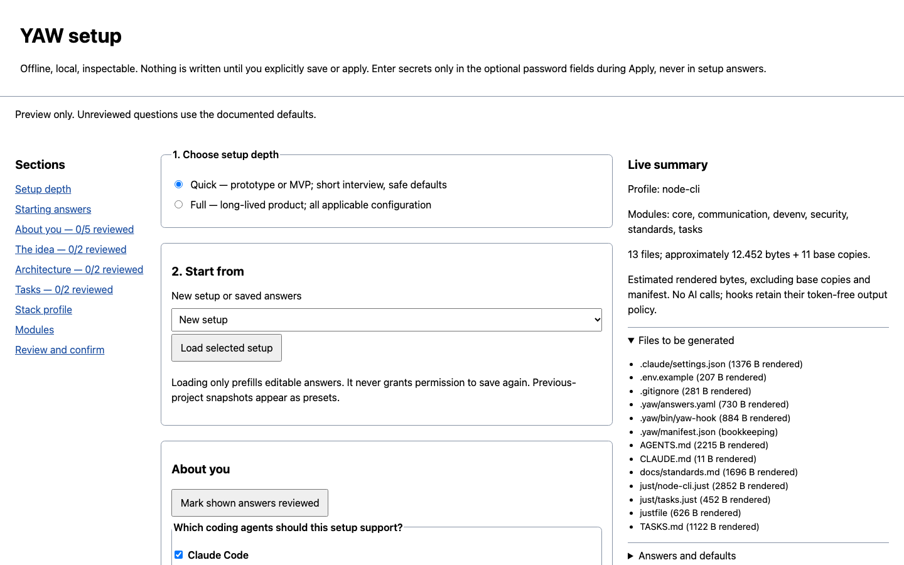

One set of instructions
Project rules live in AGENTS.md. YAW creates adapters for the agents you select, with support that varies by feature and agent.
YAW connects project setup, planning, tasks, decisions and session history in files you control. Work with Claude Code, Codex or Copilot CLI, then use the local dashboard to see what happened.
Open source · Zero runtime dependencies · Local first

WHY YAW
Project rules live in AGENTS.md. YAW creates adapters for the agents you select, with support that varies by feature and agent.
Inspect the proposal before setup. Keep your edits when YAW updates managed files, and choose the modules your project needs.
Tasks, decision records, handoffs and session links make the next session easier to orient, even when you switch agents.
FROM IDEA TO NEXT SESSION
Use the terminal or local browser for setup. After that, the same project files guide your daily work.
yaw init helps you choose a profile, agents and Quick or Full setup. Review the proposed files before applying them.
yaw kickoff gives you a planning prompt. Import the finished plan into local tasks or GitHub issues.
yaw web shows workspace and global views. Session links and handoffs help you find the thread again.
WHAT YAW ACTUALLY DOES
Choose a small starting kit or add deeper workflows as the project grows. Each capability has a clear command or project file behind it.
yaw kickoff produces a project-aware prompt. Save the resulting plan and import it as tasks, including model tier and effort hints.
Use a local TASKS.md, GitHub issues, or both. Optional team mode adds issue-linked commit and PR checks; GitHub forms and planning skills help structure work.
Record decisions and risks, recall relevant decisions at task start, and browse project and personal Markdown knowledge in a read-only local view.
just decisions recall "task"Explicitly scan local Claude Code, Codex and Copilot CLI history. Compare counts, lengths and timing; optionally classify turns with your own local Laya service.
yaw sessions analyticsOptional comfort hooks can notify you after long runs. Configure Telegram in the local dashboard with credentials kept in your environment.
yaw notify testProfiles generate just setup and check commands. Optional hooks, skills, code maps and GitHub workflows support the agents and team you chose.
LOCAL WORKSPACE DASHBOARD
Browse current-workspace tasks and sessions, global projects and session history, decisions and knowledge, notification settings, and the saved code map. Session scans and Laya classification are explicit actions.
Explore dashboard detailsIllustration of dashboard areas
START WITH CONTROL
YAW's local browser interview shows Quick and Full choices, project questions and a live file plan. The terminal interview can hand off to the browser at any question.

GROWS WITH THE PROJECT
Shared instructions, development commands, local tasks and essential guards. Add modules whenever you need them.
Include decisions, sessions, comfort features and a code map. GitHub and CI options follow your project choices.
READY WHEN YOU ARE
Install YAW, then run yaw init from the root of your project. Requires Node.js 22.13+, Git and macOS or Linux; Windows works through WSL.
curl -fsSL https://raw.githubusercontent.com/nickyreinert/yaw/v0.1.0/install.sh | bash -s -- --tag v0.1.0yaw init